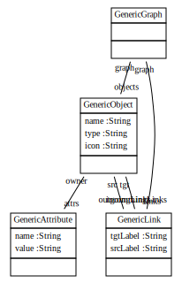
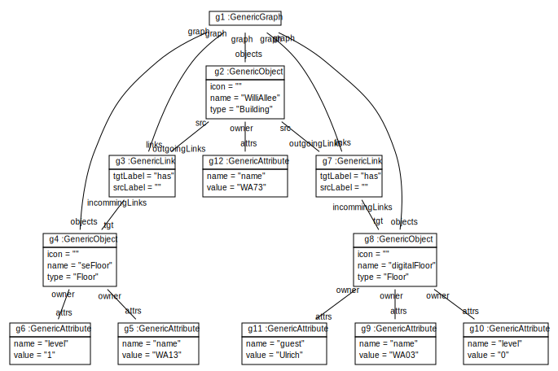
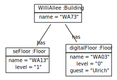
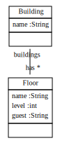

Scenario GenericObjectDiagram
Start situation: we do not yet have a class diagram but want to start with some example object models
Step 1: We build a generic class model for object structures:
Step 2: We just build our example object structure with generic objects:
Step 3: Then we tune our diagram dumper to show it as a non-generic object diagram:
Step 4: now we try to learn a class diagram from the generic object structure:
Step 5: generate model creation code to allow the developer to adjust e.g. attribute types and associoation cardinalities:
Step 6: generate code from the learned class diagram
Step 7: derive non-generic objects from the generic objects